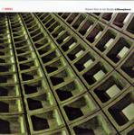

| Artist: | Robert Rich and Ian Boddy |
| Title: | Lithosphere |
| Label: | DiN 21 |
| Length(s): | 53 minutes |
| Year(s) of release: | 2005 |
| Month of review: | [05/2006] |
| 1) | Threshold | 2.07 |
| 2) | Vent | 5.20 |
| 3) | Chamber | 6.29 |
| 4) | Glass | 3.40 |
| 5) | Subduction | 5.34 |
| 6) | Geode | 6.32 |
| 7) | Stone | 3.51 |
| 8) | Metamorphic | 7.25 |
| 9) | Lithosphere | 6.29 |
| 10) | Melt | 5.15 |
Chamber brings back some of the sound of Threshold, but is mainly rather percussive. The music stays relaxed and subdued with the melodic part lying underneath the rhythmic part. The track closes rather claustrophobically.
Glass is more like Vent, but without the percussion. A serene piece of work in the line of Fripp's solo work. Rhythm returns on Subduction, and actually when you care not to pay too much attention, one seamlessly finds oneself immersed in the waters of Geode. That's how easy it is. Later, rhythm set back in, a bit in gamelan style revealing a world music ethic (not ethnic). The end is a bit too playful for these guys.
Stone is rich in weird sounds, like things rolling on the ground (stones, I guess). The follow-up is rather stark in its sound. It seems we have entered some low cavern, with all the mystery and spookiness that entails. The sound effects take us into Metamorphic. This is another spooky piece, with some industrial sounding components. Towards the end, the music takes on a fuller, more orchestral feel.
Lithosphere bring the playfulness back into the music. The percussion is back, and the world music ethic too. The song has a synthetic kind of female wail, which dominates the proceedings. The closer of the album is Melt, which opens with ambient keyboards, quite warm. Then strings make it turn for the orchestral again. The song ends slowly.